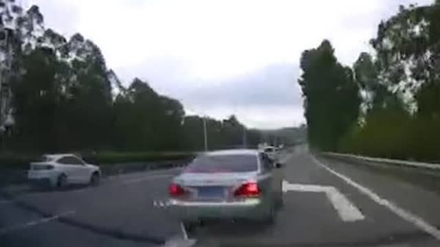

回复@携风牧云:我没给建议啊。只是把自己的计划公布出来。//@携风牧云:回复@做只有翅膀的猪:管一次你就知道给别人建议是多可怕的一件事了，另外也就理解现在e大给这成千上万的人建议是一件风险多大的事了（同时也是特别了不起的一件事）@ETF拯救世界:说出来你不信，继昨天跌破历史平均后，今天又跌破了五年+十年平均。hello ，下半场。我们来了。
回复@叶子黄了又绿:我不在江湖，江湖依然有……//@叶子黄了又绿:E大，你的号召力惊人啊。看到雪球今天10大净买入，500etf排名第五，广发医药排名第八，红利基金排名第九@ETF拯救世界:2015年6月以来，除了那几十只超级大白马的股东，其他所有持有股票的人都伤痕累累。在这个时候买入，你应该知道，在未来的某个时间点回头看，你很大概率不会赔钱。至于能赚多少，真的不好说。因为不知道未来会有多么疯狂。但你只要知道，这里买，买那些永远不会死的东西，长期看真的很难赔钱。所以不管未来手里的东西跌成什么样，take easy。打仗哪儿有不流一滴血就能胜利的。想要等牛市再入场的，都在山顶上套着呢。
我看大家都很激动。高兴高兴也好。不过我想说的，是大多数人，也包括在座的很多朋友，根本无缘抓住这次财富暴发。至于为什么，几年后回来看的时候你就懂了。有时候我们习惯于把自己想得太过强大了。@ETF拯救世界:2015年6月以来，除了那几十只超级大白马的股东，其他所有持有股票的人都伤痕累累。在这个时候买入，你应该知道，在未来的某个时间点回头看，你很大概率不会赔钱。至于能赚多少，真的不好说。因为不知道未来会有多么疯狂。但你只要知道，这里买，买那些永远不会死的东西，长期看真的很难赔钱。所以不管未来手里的东西跌成什么样，take easy。打仗哪儿有不流一滴血就能胜利的。想要等牛市再入场的，都在山顶上套着呢。
回复@杰克WAS-TAKEN:股市收益率与GDP基本没什么关系。取决于：1，你买入的估值、价格。2，牛市中的货币供应，资金量，以及群众的情绪。三者相加，决定你能在股市赚多少。中国GDP稳定在10%以上的时候，依然是70%的人不赚钱。//@杰克WAS-TAKEN:新常态GDP增速降到6.5了@ETF拯救世界:2015年6月以来，除了那几十只超级大白马的股东，其他所有持有股票的人都伤痕累累。在这个时候买入，你应该知道，在未来的某个时间点回头看，你很大概率不会赔钱。至于能赚多少，真的不好说。因为不知道未来会有多么疯狂。但你只要知道，这里买，买那些永远不会死的东西，长期看真的很难赔钱。所以不管未来手里的东西跌成什么样，take easy。打仗哪儿有不流一滴血就能胜利的。想要等牛市再入场的，都在山顶上套着呢。
回复@夏创杰:从去年开始，我就说这轮熊市与02年开始的那次太像了。包括外部金融环境，货币环境等。股市走势也特别特别像，甚至包括现在抱团大白马。如果之后还能复制那次的情况，那么中小股票将有一个超级大底出现，然后就是4-5倍以上的财富超级大飞跃。@ETF拯救世界:2015年6月以来，除了那几十只超级大白马的股东，其他所有持有股票的人都伤痕累累。在这个时候买入，你应该知道，在未来的某个时间点回头看，你很大概率不会赔钱。至于能赚多少，真的不好说。因为不知道未来会有多么疯狂。但你只要知道，这里买，买那些永远不会死的东西，长期看真的很难赔钱。所以不管未来手里的东西跌成什么样，take easy。打仗哪儿有不流一滴血就能胜利的。想要等牛市再入场的，都在山顶上套着呢。
回复@手机用户3315329237:嗯。2017过了一半，年初的这个预测算是有一点眉目了。今年会发生一些事，改变很多人的财富命运。有的变好，有的变差。更多人会在今年种下一些资产飞跃的种子。拭目以待吧。@ETF拯救世界:说出来你不信，继昨天跌破历史平均后，今天又跌破了五年+十年平均。hello ，下半场。我们来了。
2015年6月以来，除了那几十只超级大白马的股东，其他所有持有股票的人都伤痕累累。在这个时候买入，你应该知道，在未来的某个时间点回头看，你很大概率不会赔钱。至于能赚多少，真的不好说。因为不知道未来会有多么疯狂。但你只要知道，这里买，买那些永远不会死的东西，长期看真的很难赔钱。所以不管未来手里的东西跌成什么样，take easy。打仗哪儿有不流一滴血就能胜利的。想要等牛市再入场的，都在山顶上套着呢。
人无百日好，花无百日红。得意的时候多想想困难，失意的时候多想想希望就在不远处。股票何尝不是如此。比如中国平安，最近涨了一点。持有的人当然高兴，所谓“价值投资”的光芒再次燃烧了起来。要我说，不过是三十年河东三十年河西而已。现在人人都要踩上一脚的创业板在2012-2014从500多点涨到1300多点的时候，平安两年原地没动。那时候的“大烂臭”，岂不是和现在被唾弃的中小创一样？没有什么绝对好的，绝对差的。现在好的，未来未必好，现在差的亦如是。再说了，好的东西，价格不好，恐怕也没那么大吸引力。我最不喜欢的，就是利用影响力疯狂鼓吹已经涨了很多的东西还会大涨的人。你说，哪个万人坑不是他们忽悠出来的？
我推荐所有人看看这个：网页链接 我打5分的一部电影。//@八大山债人://@水獭otter:危险驾驶罪一点问题也没有，看能不能定成危害公共安全罪。要严判。//@何兵: 抓人！//@我是风啊1888_80g:这个人应该判刑@时间视频:【插队未遂后报复？司机高速疯狂别车175秒】因在高速路口处插队未遂，皇冠车主在长达175秒的时间里，至少5次疑似报复性别车。沃尔沃车内6岁孩子刚说完“打110”，便头朝下摔倒，当场受伤大哭。事后，皇冠车主欲私了，沃尔沃车主：我不要钱，我要警方公正处理。时间视频的秒拍视频  2722万次播放 02:45